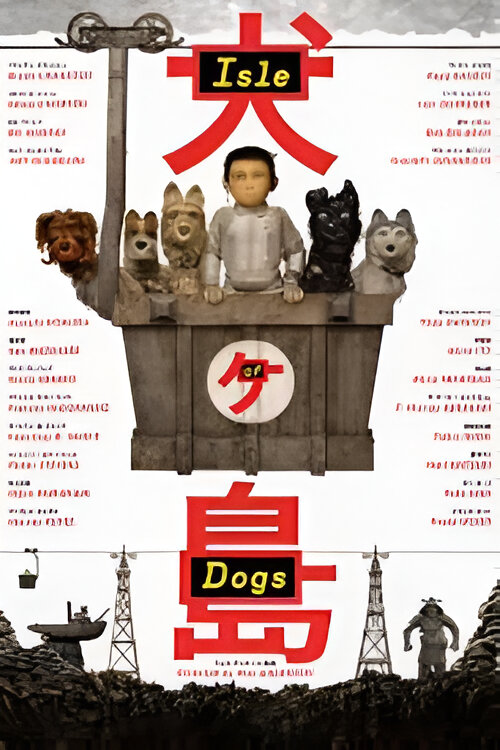

Lista de recomendação

Gênero: Animação, Fantasia, Aventura Onde assistir: Netflix. |
NotasIMDB:7,6 Rotten Tomateos: critíca:97% Público:91% J&J:8,5 |
SinipseNesta nova versão do clássico, Pinóquio é um boneco de madeira que ganha vida e deseja se tornar um menino de verdade. Ao longo de sua jornada, ele descobre as complexidades da vida, amor e moralidade, em um cenário que explora as consequências da guerra e da família. |
|
Review pessoalGuillermo del Toro trouxe uma visão totalmente nova pra história do Pinóquio. Esquece aquela coisa fofinha da Disney — aqui, o filme é mais sombrio, e explora temas como morte, guerra e identidade de um jeito mais sério. A animação é deslumbrante, e cada personagem parece carregado de significado. É um filme que te faz refletir, não só pela beleza visual, mas também pelas mensagens mais profundas sobre obediência e liberdade. Definitivamente, não é uma versão pra crianças pequenas, mas é uma obra incrível. |

Gênero: Animação, Fantasia, Mistério Onde assistir: Amazon Prime Video. |
NotasIMDB:7,7 Rotten Tomateos: critíca:90% Público:73% J&J:8,6 |
SinipseCoraline descobre uma porta secreta em sua nova casa que leva a uma realidade paralela aparentemente perfeita, onde as coisas parecem melhores do que em sua vida real. No entanto, ela logo descobre que esse mundo esconde segredos sombrios e perigosos. |
|
Review pessoalEsse aqui é uma das animações mais intrigantes que já vi. Coraline começa como uma aventura infantil, mas logo vai se transformando num conto de terror daqueles que te faz questionar o que é real ou não. A Coraline descobre uma outra versão da sua vida, onde tudo parece perfeito, mas tem um preço bem sombrio. O visual é de arrepiar, principalmente o contraste entre o mundo real e o "outro" mundo. É um filme que trabalha bem os medos da infância, mas com um toque de mistério e fantasia que faz a gente ficar preso até o final. |

Gênero: Animação, Fantasia, Musical Onde assistir: HBO Max. |
NotasIMDB:7,3 Rotten Tomateos: critíca:84% Público:77% J&J:8,8 |
SinipseVictor, um jovem tímido, acidentalmente se compromete a se casar com uma noiva cadáver enquanto ensaiava seus votos de casamento. Ele é arrastado para o submundo, onde precisa resolver o dilema entre sua noiva viva e sua noiva fantasma. |
|
Review pessoalTim Burton fazendo o que ele sabe fazer de melhor: misturar o macabro com o doce. A Noiva Cadáver tem aquela vibe gótica típica dele, mas ao mesmo tempo é um romance super sensível. A história do Victor, que sem querer promete casamento a uma noiva morta, é cheia de momentos engraçados e até emocionantes. A animação é linda, com aqueles personagens magricelos e olhos gigantes. É um filme perfeito pra quem curte um "gótico suave" com uma pitada de humor negro. |
|

Gênero: Aventura, Animação, Comédia Onde assistir: Star+. |
NotasIMDB:7.8 Rotten Tomateos: critíca:90% Público:87% J&J:9,8 |
SinipseEm um Japão distópico, após um surto de gripe canina, todos os cães são banidos para uma ilha de lixo. Um menino chamado Atari, de 12 anos, viaja até a ilha para encontrar seu cachorro. Com a ajuda de um grupo de cães exilados, ele inicia uma jornada para resgatar seu companheiro. |
|
Review pessoalEsse filme é uma verdadeira viagem visual. Wes Anderson criou um universo cheio de detalhes e com aquele humor seco, que a gente já espera dele. A história, que parece simples — um garoto indo resgatar seu cachorro exilado numa ilha de lixo —, acaba revelando camadas mais profundas. É como uma fábula moderna sobre lealdade e política. A animação é impecável, e a trilha sonora também ajuda a imergir na trama. Eu gostei muito da forma como o filme mistura crítica social com aquele tom meio despretensioso. |